A Concise Illustrated Guide to Blood Cell Morphology & Coagulation
Visual atlas • English concise notes • For students & laboratory staff
Educational reference — not a substitute for validated clinical protocols.
Contents
Table of Contents
1 How to Read a Peripheral Blood Smear
2 Red Blood Cell Morphology
3 White Blood Cell Morphology
4 Platelet Morphology
5 Overview of Hemostasis
6 Primary Hemostasis — The Platelet Plug
7 Secondary Hemostasis — The Coagulation Cascade
8 Anticoagulants & Fibrinolysis
9 Coagulation Laboratory Tests
Part III — Atlas of Abnormal Cell Morphology
10 Abnormal Red Cells & Inclusions (with photos)
11 Abnormal White Cells (with photos)
12 Morphology Alert — Cell → Diagnosis
Part IV — Beginner's Guide: Reading a Blood Smear
13 Step 1 — Making a Good Blood Film
14 Step 2 — Microscope Set-up & Scanning
15 Step 3 — A Beginner's Read, Step by Step
16 Quick Reference Tables
How to use this atlas
Part I (Morphology) trains the eye on what normal and abnormal blood cells look like.
Part II (Coagulation) explains how the body forms and dissolves a clot, and how the lab measures it.
Each topic is kept short: read the note, study the figure, then use the reference tables to revise.
Essentials of HematologyContents
Part I — Morphology • Chapter 1
1. How to Read a Peripheral Blood Smear
The blood film is the oldest and still one of the most informative tests in hematology.
A well-made, well-stained smear lets you assess all three cell lines at once.
Making & examining the film
Preparation: a small drop of EDTA blood is spread with a spreader slide at ~30–45°, air-dried, then stained with a Romanowsky stain (Wright or Wright–Giemsa).
The reading zone: examine where red cells just stop overlapping — the “monolayer”. Here central pallor and true morphology are visible.
Systematic scan: low power (10×) for distribution & clumps → high dry / oil (40–100×) for detailed morphology → estimate a differential count.
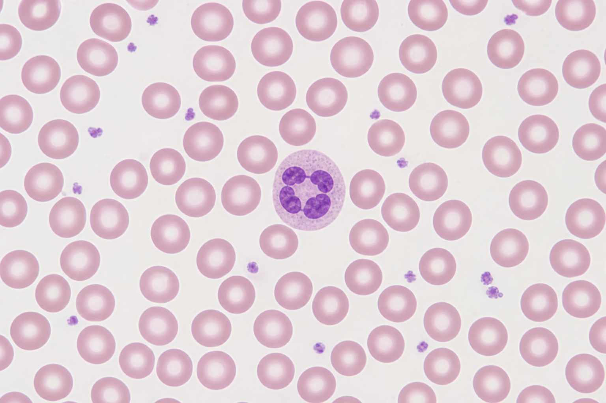
Fig 1.1 — Normal peripheral blood film. Uniform red cells with central pallor (~1/3 of diameter),
a segmented neutrophil, and scattered platelets. This is the reference against which all abnormalities are judged.
What to report
Red cells: size, colour, shape, inclusions. White cells: numbers, differential, maturity, reactive changes.
Platelets: number (estimate), size, clumping. Always correlate with the automated CBC.
Essentials of HematologyCh.1 — Blood Smear
Part I — Morphology • Chapter 2
2. Red Blood Cell Morphology
RBC abnormalities are described in four axes: size, colour,
shape, and inclusions. A normal RBC is 7–8 µm, biconcave, with central pallor.
Blasts — high nucleus:cytoplasm ratio, fine chromatin, nucleoli; Auer rods suggest AML. Always flag for review.
Essentials of HematologyCh.3 — White Cells
Part I — Morphology • Chapter 4
4. Platelet Morphology
Platelets are anucleate cytoplasmic fragments of megakaryocytes, 2–4 µm,
with fine purple granules. Normal count 150–450 ×10⁹/L.
On the film
Number: roughly 8–20 platelets per oil field ≈ normal; each platelet ≈ 15–20 ×10⁹/L.
Large / giant platelets: ITP, myeloproliferative disease, inherited macrothrombocytopenias.
Platelet clumps: EDTA-induced pseudothrombocytopenia — recollect in citrate.
Platelet satellitism: platelets rosetting around neutrophils (EDTA artefact).
Always confirm low counts
A low automated platelet count must be checked against the film before reporting.
Clumps, giant platelets, or fibrin strands can falsely lower the analyser count.
Critical value
Marked thrombocytopenia (<20 ×10⁹/L) carries a spontaneous bleeding risk and is usually a call-back result.
From morphology to function
Platelet number and size on the smear are the visual bridge to the next part of this atlas:
platelets are the first responders of hemostasis. We now follow them into clot formation.
Essentials of HematologyCh.4 — Platelets
Part II — Coagulation • Chapter 5
5. Overview of Hemostasis
Hemostasis is the balanced process that stops bleeding at a site of injury while
keeping blood fluid everywhere else. It has three overlapping phases.
Phase
Main players
Result
1. Primary hemostasis
Platelets, von Willebrand factor, vessel wall
Unstable platelet plug (seconds–minutes)
2. Secondary hemostasis
Coagulation factors → thrombin → fibrin
Stable fibrin-reinforced clot
3. Fibrinolysis
Plasmin, tPA
Controlled clot breakdown & remodelling
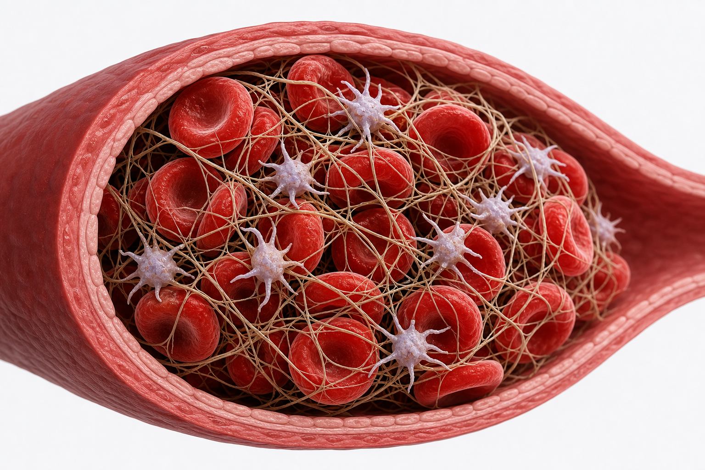
Fig 5.1 — The mature clot. A fibrin mesh (thin strands) cross-links activated platelets and traps
red cells, converting the fragile platelet plug into a stable thrombus.
The balance concept
Procoagulant forces (platelets, clotting factors) are constantly opposed by anticoagulant and fibrinolytic
forces (antithrombin, protein C/S, plasmin). Bleeding or thrombosis results when this balance is disturbed.
Essentials of HematologyCh.5 — Hemostasis
Part II — Coagulation • Chapter 6
6. Primary Hemostasis — The Platelet Plug
Within seconds of vessel injury, platelets form the first seal in three steps:
adhesion → activation → aggregation.
The three steps
Adhesion: exposed subendothelial collagen binds von Willebrand factor (vWF),
which tethers platelets via receptor GPIb.
Activation: platelets change shape, extend pseudopods, and release granule contents
(ADP, thromboxane A₂, serotonin), recruiting more platelets.
Aggregation: activated GPIIb/IIIa receptors bind fibrinogen,
cross-linking platelets into a plug.
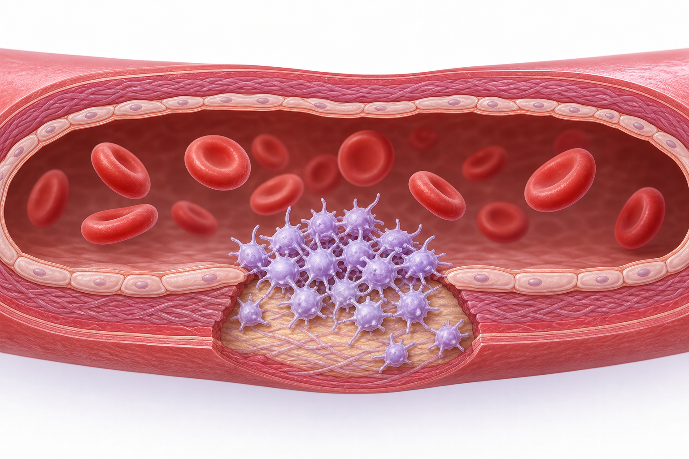
Fig 6.1 — Primary hemostasis. Platelets adhere to the exposed subendothelium at the site of injury
and aggregate into a plug that temporarily seals the defect.
Disorders of primary hemostasis
Present with mucocutaneous bleeding: petechiae, easy bruising, epistaxis, menorrhagia.
Examples: thrombocytopenia, von Willebrand disease, aspirin/clopidogrel effect, Glanzmann (GPIIb/IIIa),
Bernard–Soulier (GPIb).
Test link
Screened with platelet count and platelet function assays (PFA-100/closure time); vWF activity for suspected VWD.
Essentials of HematologyCh.6 — Platelet Plug
Part II — Coagulation • Chapter 7
7. Secondary Hemostasis — The Coagulation Cascade
A chain of serine-protease reactions converts fibrinogen to fibrin.
The classic model has an intrinsic and an extrinsic arm meeting in a
common pathway. This model maps directly onto the lab tests.
Fig 7.1 — Coagulation cascade. Factor numbering in Roman numerals; “a” = activated form.
Modern cell-based models emphasise that tissue factor/VIIa initiates coagulation in vivo, with the intrinsic arm amplifying thrombin — but the classic diagram still explains PT and aPTT.
Vitamin K–dependent factors
II, VII, IX, X (and proteins C & S). Target of warfarin. Factor VII has the shortest half-life → PT rises first.
Cofactors & calcium
Factors V and VIII are cofactors (not enzymes). Ca²⁺ (factor IV) and phospholipid surfaces are required throughout.
Essentials of HematologyCh.7 — Cascade
Part II — Coagulation • Chapter 8
8. Anticoagulants & Fibrinolysis
Clotting must be confined to the injury site. Natural inhibitors localise the clot,
and fibrinolysis removes it once healing begins.
Natural anticoagulant systems
System
Action
Note
Antithrombin (AT)
Inhibits thrombin & Xa (IXa, XIa)
Accelerated by heparin
Protein C + Protein S
Inactivate factors Va & VIIIa
Activated by thrombin–thrombomodulin; vitamin K–dependent
Tissue factor pathway inhibitor (TFPI)
Inhibits TF–VIIa & Xa
Down-regulates initiation
Factor V Leiden
A mutation making factor Va resistant to protein C (“activated protein C resistance”) — the commonest
inherited thrombophilia.
Fibrinolysis
Plasminogen → plasmin, driven by tissue plasminogen activator (tPA) and urokinase.
Plasmin digests fibrin, releasing fibrin degradation products (FDPs) and D-dimer.
Regulated by PAI-1 (inhibits tPA) and α2-antiplasmin (inhibits plasmin).
D-dimer is a specific product of cross-linked fibrin breakdown — raised in DVT/PE, DIC, and many acute states.
Essentials of HematologyCh.8 — Anticoagulation
Part II — Coagulation • Chapter 9
9. Coagulation Laboratory Tests
Most bleeding/clotting screens rest on a handful of tests. Match the abnormal test to the pathway.
Test
Measures
Typical range*
Prolonged by
PT / INR
Extrinsic + common (VII, X, V, II, I)
PT 11–14 s; INR ~1.0
Warfarin, liver disease, factor VII deficiency
aPTT
Intrinsic + common (XII, XI, IX, VIII, X, V, II, I)
25–35 s
Heparin, hemophilia A/B, lupus anticoagulant
Thrombin time (TT)
Fibrinogen → fibrin (final step)
14–19 s
Heparin, low/abnormal fibrinogen
Fibrinogen
Factor I level
2–4 g/L
Low in DIC, liver disease
D-dimer
Fibrin breakdown
<0.5 mg/L FEU
Raised in VTE, DIC, inflammation
Platelet count
Primary hemostasis
150–450 ×10⁹/L
—
*Reference ranges vary by reagent/analyser; always use your own laboratory's validated values.
Reading the pattern
PT ↑, aPTT normal → extrinsic (factor VII), early warfarin.
DIC pattern
↑PT, ↑aPTT, ↓platelets, ↓fibrinogen, ↑↑D-dimer, plus schistocytes on the film — a consumptive coagulopathy.
Essentials of HematologyCh.9 — Lab Tests
Part III — Abnormal Morphology • Chapter 10
10. Abnormal Red Cells & Inclusions
Part III is a photo atlas: each figure shows an abnormal finding as it appears on a
Wright–Giemsa film, with a one-line meaning. Use it to match what you see down the microscope.
Fig 10.2 — Bite & blister cells. Semicircular “bite” defect and hemoglobin pushed to
one side after splenic removal of Heinz bodies. G6PD deficiencyOxidative hemolysis
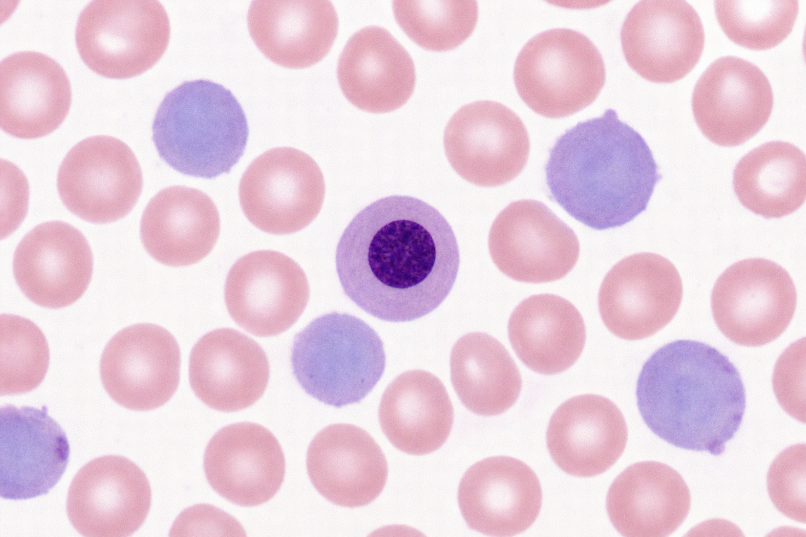
Fig 10.3 — Nucleated RBC (normoblast) + polychromasia. Immature red cells released
early; bluish polychromatic cells are reticulocytes. Brisk hemolysisMarrow stressNeonate
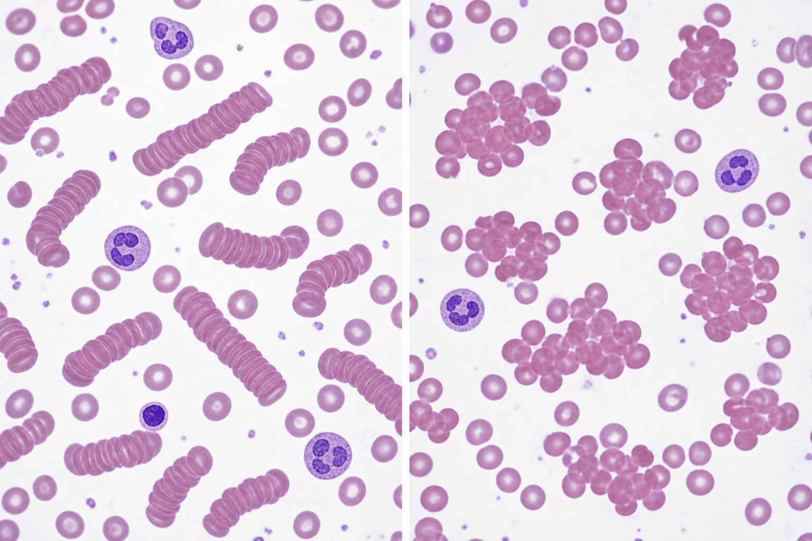
Fig 10.4 — Rouleaux (left) vs agglutination (right). Coin-stack rows vs irregular clumps. High protein / myelomaCold agglutinins
Essentials of HematologyCh.10 — Abnormal Red Cells
Part III — Abnormal Morphology • Chapter 11
11. Abnormal White Cells
Leukocyte abnormalities range from benign reactive change to leukemic blasts.
The four findings below cover most “flag for review” smears.
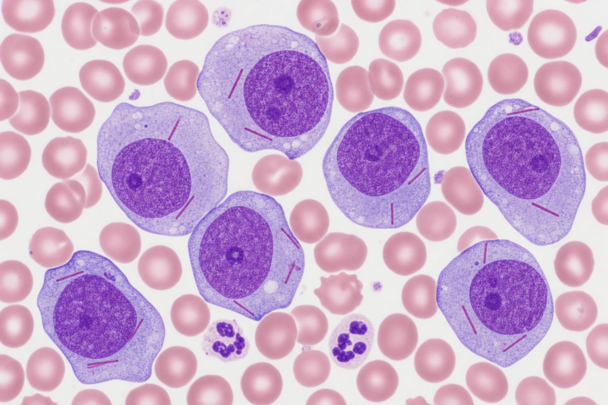
Fig 11.1 — Blasts with Auer rods. Large cells, high N:C ratio, fine chromatin, nucleoli;
red rod-shaped Auer rods are diagnostic of myeloid lineage. Acute myeloid leukemiaUrgent flag
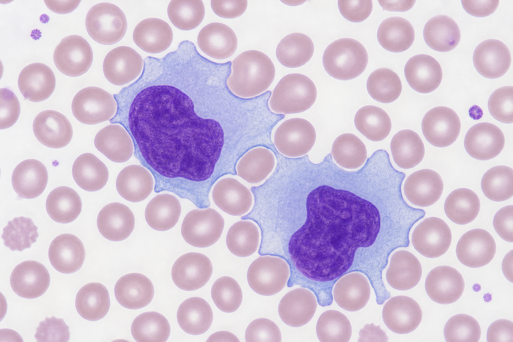
Fig 11.2 — Reactive (atypical) lymphocytes. Large cells, abundant pale-blue cytoplasm
indenting around neighbouring red cells. EBV / mononucleosisViral infection
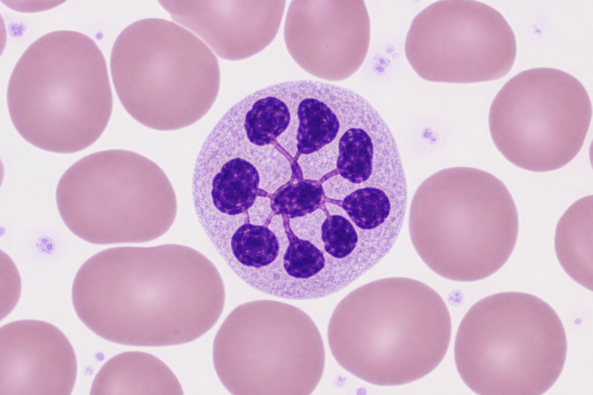
Fig 11.3 — Hypersegmented neutrophil. Six or more nuclear lobes, often with macrocytes. B12 / folate deficiencyMegaloblastic
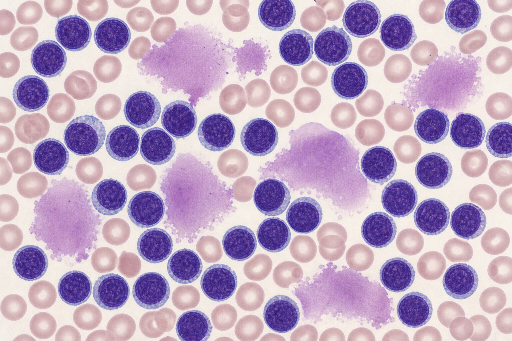
Fig 11.4 — Smudge (smear) cells. Many small mature lymphocytes plus fragile ruptured
cells crushed during smearing. Chronic lymphocytic leukemia
Essentials of HematologyCh.11 — Abnormal White Cells
Part III — Abnormal Morphology • Chapter 12
12. Morphology Alert — Cell → Diagnosis
A one-glance lookup linking each abnormal cell to its first-line differential.
Bold rows are “critical / flag for immediate review”.
Abnormal cell / finding
Appearance in one line
First consider
Blasts / Auer rods
Large immature cell, nucleoli; red cytoplasmic rod
Acute leukemia (AML) — urgent
Hypersegmented neutrophil
≥6 nuclear lobes
B12 / folate deficiency
Reactive lymphocytes
Large, pale-blue cytoplasm hugging RBCs
EBV / viral infection
Smudge cells
Ruptured bare lymphocyte nuclei
Chronic lymphocytic leukemia
Schistocytes + low platelets
Red cell fragments, helmet cells
MAHA / DIC / TTP-HUS — urgent
Sickle cells
Rigid crescents
Sickle cell disease
Spherocytes
Dense round cells, no central pallor
Hereditary spherocytosis, AIHA
Target cells
Bullseye central density
Liver disease, thalassemia, HbC
Teardrop cells
Pear-shaped dacrocytes
Marrow fibrosis / infiltration
Bite / blister cells
Semicircular bite; shifted hemoglobin
G6PD deficiency / oxidant stress
Nucleated RBCs
Red cell with a nucleus
Brisk hemolysis, marrow stress, neonate
Howell–Jolly bodies
Single round nuclear remnant
Hyposplenism / post-splenectomy
Basophilic stippling
Fine blue dots throughout cell
Lead poisoning, thalassemia
Rouleaux
Coin-stack rows of red cells
High plasma protein / myeloma
Agglutination
Irregular red cell clumps
Cold agglutinin disease
Golden rule
Any blasts, unexplained schistocytes, or a major discrepancy with the analyser count must be escalated to a
senior / pathologist before the result is released.
Essentials of HematologyCh.12 — Morphology Alert
Part IV — Beginner's Guide • Chapter 13
13. Step 1 — Making a Good Blood Film
Everything starts with a good film. A bad smear cannot be rescued — if it is uneven,
too thick, or too short, make a new one before you look.
The wedge (push) technique
Place a small drop (~2–3 mm) of well-mixed EDTA blood near one end of a clean slide.
Bring a spreader slide back into the drop at a 30–45° angle and let the blood spread along its edge.
Push forward smoothly and quickly in one motion. Do not press down.
Air-dry immediately (wave, do not blow), then stain with Wright / Wright–Giemsa.
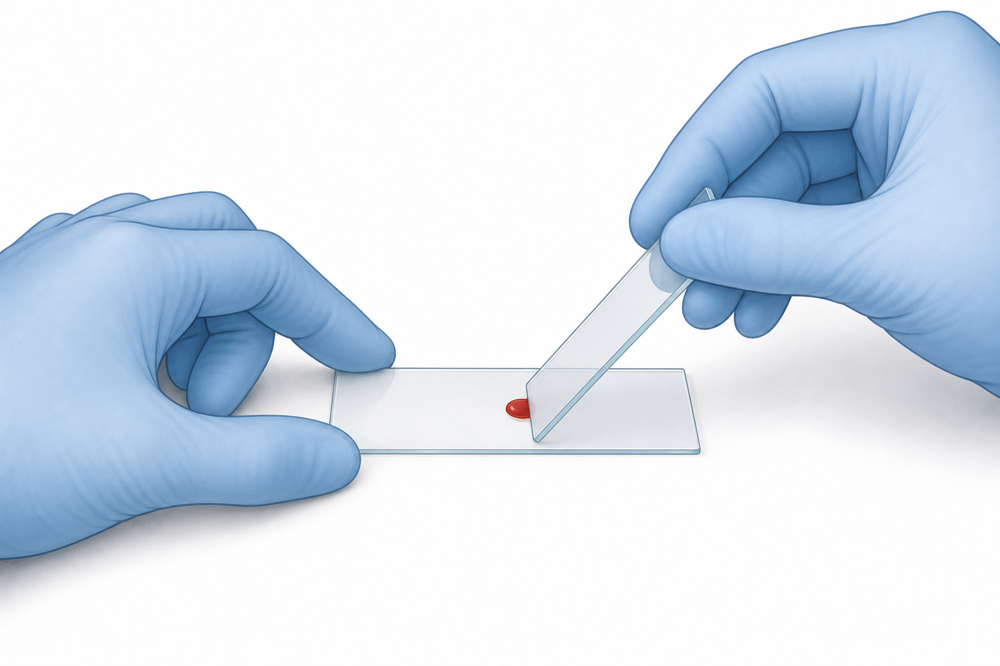
Fig 13.1 — The wedge technique. Spreader slide held at ~35°, drawn back into the drop, then pushed
forward in one smooth stroke.
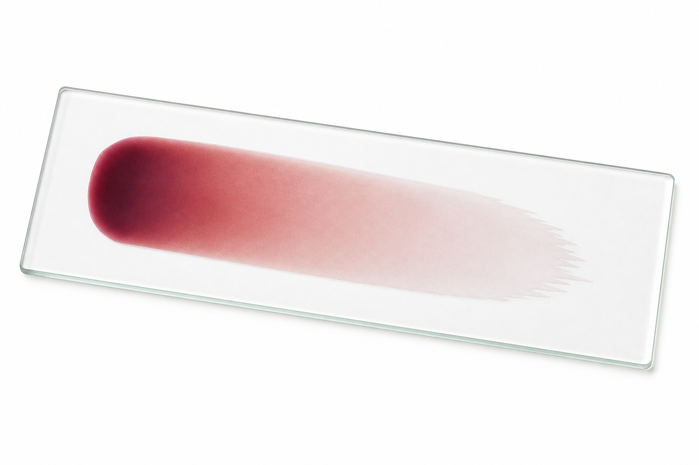
Fig 13.2 — The three regions. Thick head → even body / monolayer
→ thin feathered edge (tail).
Angle rule of thumb
Blood too thick (high Hct) → use a smaller angle / faster push.
Blood too thin (anemia) → use a larger angle / slower push.
Where you will read
The monolayer, just before the feathered edge, is the only place morphology is reliable.
The head is too thick; the very edge distorts the cells.
Essentials of HematologyCh.13 — Making a Film
Part IV — Beginner's Guide • Chapter 14
14. Step 2 — Microscope Set-up & Scanning
Move from low to high power, and scan in a fixed pattern so you never count the same cell twice
or miss an area.
Magnification ladder
10× (low power): overall quality, cell distribution, clumps, and to find the monolayer. Estimate WBC numbers.
40× (high dry): WBC differential and general red cell morphology.
100× (oil immersion): fine detail — inclusions, parasites, platelet morphology. Add a drop of oil directly on the film.
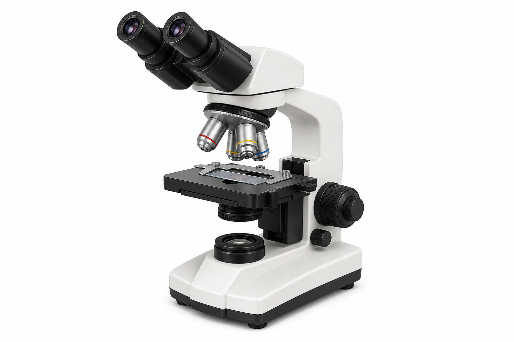
Fig 14.1 — The light microscope. Rotate objectives from short (10×) to long (100× oil);
use coarse focus only on low power.
The battlement scan
In the monolayer, move the slide in a battlement (crenellation) track — up, across, down, across —
so every field is new. This gives a representative differential.
Counting tip
Count 100 white cells in this track for a manual differential, keeping a tally of each type.
Essentials of HematologyCh.14 — Set-up & Scanning
Part IV — Beginner's Guide • Chapter 15
15. Step 3 — A Beginner's Read, Step by Step
Always read in the same order. A fixed routine means you never forget a cell line.
Does it match the analyser CBC? Flag discrepancies.
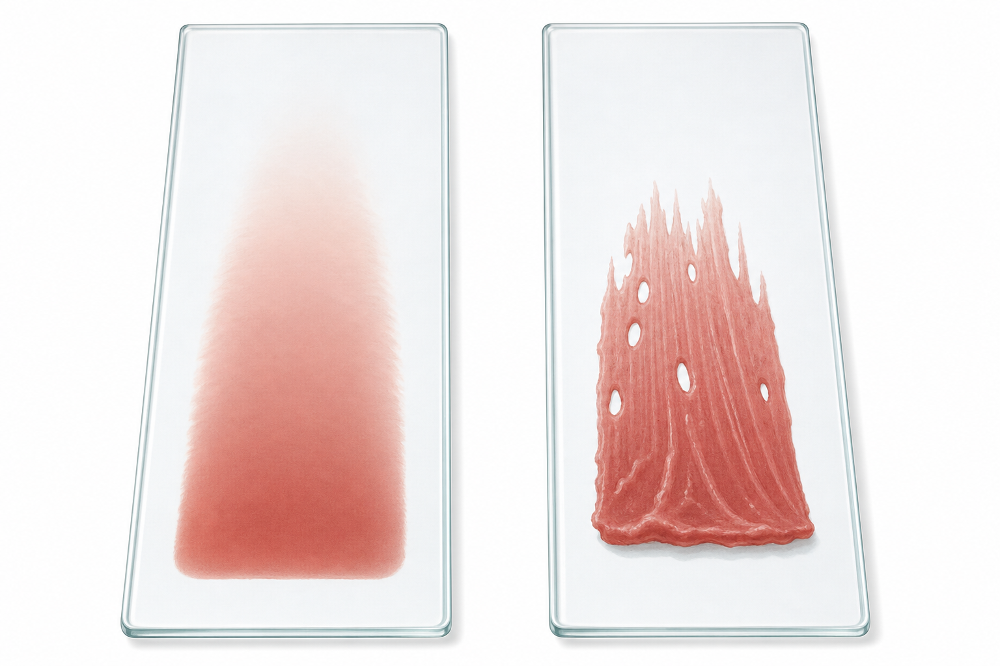
Fig 15.1 — Good vs bad film. Left: smooth, even, with a gradual feathered edge — read this.
Right: ridges, holes and an abrupt edge — remake it.
Beginner pitfalls
Reading in the thick head; using oil before finding the monolayer; mistaking stain precipitate or platelets on top
of red cells for inclusions; reporting a low platelet count without checking for clumps.
Golden habit
Same order, every time: quality → distribution → red cells → white cells → platelets → correlate.
Essentials of HematologyCh.15 — Step-by-Step Read
Reference
16. Quick Reference Tables
Morphology → Think of
Finding
First consider
Microcytic, hypochromic RBCs
Iron deficiency, thalassemia
Macrocytes + hypersegmented neutrophils
B12 / folate deficiency
Spherocytes
Hereditary spherocytosis, autoimmune hemolysis
Schistocytes + low platelets
MAHA / DIC / TTP-HUS
Target cells
Liver disease, thalassemia, HbC
Teardrop cells + leukoerythroblastic film
Marrow fibrosis / infiltration
Blasts / Auer rods
Acute leukemia — urgent review
Coagulation factors at a glance
Factor
Name
Pathway
I
Fibrinogen
Common
II
Prothrombin*
Common
III
Tissue factor
Extrinsic
IV
Calcium
All
V
Proaccelerin (cofactor)
Common
VII
Proconvertin*
Extrinsic
VIII
Antihemophilic (cofactor)
Intrinsic
IX
Christmas*
Intrinsic
X
Stuart–Prower*
Common
XI
PTA
Intrinsic
XII
Hageman
Intrinsic
XIII
Fibrin-stabilizing
Cross-linking
*Vitamin K–dependent (II, VII, IX, X). Hemophilia A = VIII deficiency; Hemophilia B = IX deficiency.
End of atlas
Morphology tells you what the cells look like; coagulation tells you how they stop bleeding.
Together they cover the core of routine laboratory hematology.